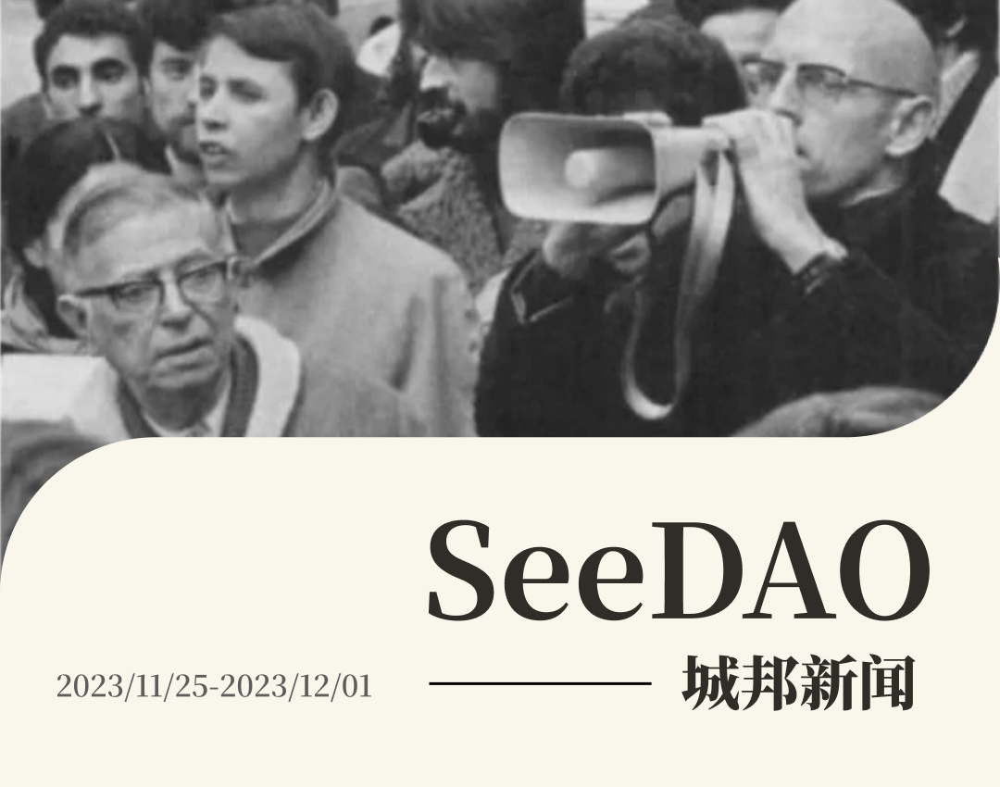
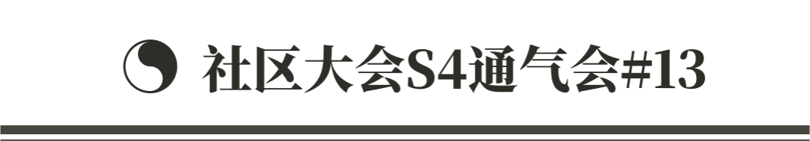
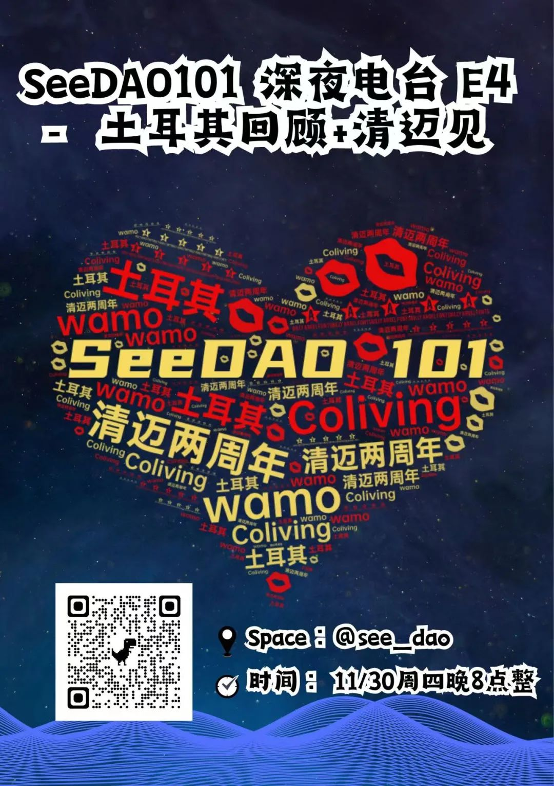
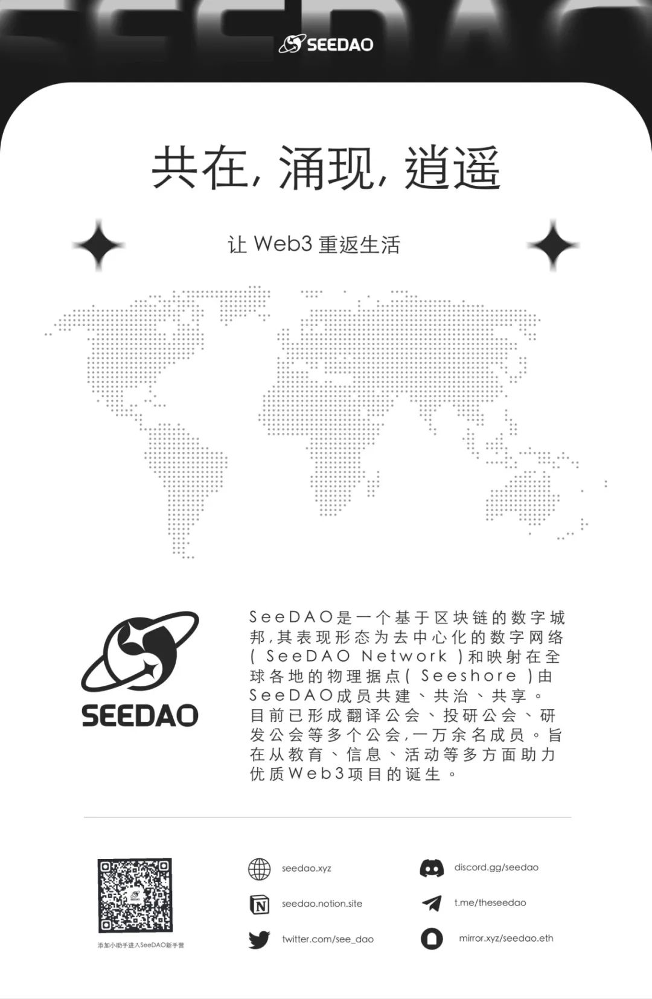

✦ 日常维护运维

✦ 本周新发起 P1 提案 1 个， 结项 P1 提案 1 个。
新增 P1 提案: SeeU in Singapore 人工智能线下分享 - 23年12月1号 OGBC新加坡办公室
/ 开场：5-10分钟SeeDAO介绍，并且重点突出SeeDAO近期的发展和计划
/ 形式: 三位AI行业专家进行keynote speech分享 + 自由交流
/ 特别环节: 介绍将于2023年12月16日（周六）在泰国·清迈举行的SeeDAO两周年生态发布会 “Our Polis 我们的城邦”
/ 提案详情：https://discord.com/channels/841189467128594442/1178632699473313832/1178632699473313832
✦ 完成结项 P1 提案：Seed NFT 二创征集
/ 结项投票结果：120%
/ 投票链接：
https://forum.seedao.xyz/thread/p1-p1-seed-nft-47546
✦ 每周 P2 和 P3 提案无新增，未通过提案 1个
/ P2 提案《SeeU in Singapore 人工智能线下分享 - 23年12月1号 OGBC新加坡办公室》，因票数不够，未通过。


✦ 翻译公会｜Nechi、SuanNai、Shawna
/ Make Translation Guild Great Again｜第 8 届协调小组成员竞选演讲 & 工作事项交替
/ On Boarding：Lexy
/ Notion 管理 + 积分登记：Shawna
/ 轻共学（整活儿）品牌（VI识别体系等）、活动、策划、外联：SuanNai
/ 首席校对官：Nechi & Shawna
✦ 翻译一本书｜项目进展
/ 筹备选书会｜欢迎大家推荐「书单」

✦ 研发公会 S5 主理人招募
/ 招募时间：11.30-12.06
/ 选举时间：12.07
/ 任期：3个月
/ 积分激励：最高 80000 积分激励
报名链接：https://tally.so/r/nPzbAb
/ 责权说明：
保障研发公会的正常运行。 新成员Onboarding。 每周周会的开展。 微信群运营。 季度SBT、积分登记和发放。 下届主理人招募等。 持续推动研发公会开源建设、共学建设、黑客松建设的发展路线。 研究研发公会持续性发展方案。
拥有5000积分及以上。 具备互联网行业工作经验，了解软件开发流程。
主理人可以申请退出，退出时根据任职时间、长老团Review评价，做积分结算。 主理人退出后，由长老团来继续招募下一届主理人。



—
